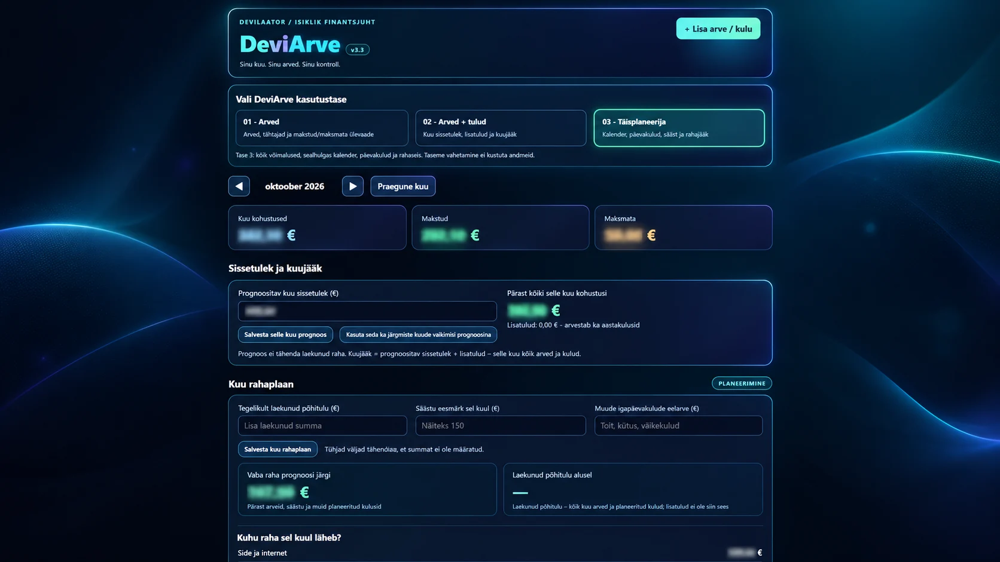

DeviArve
ISIKLIK • FINANTSJUHT
DeviArve on isikliku rahaasjade korraldamiseks tehtud Windowsi rakendus. Siia saan kirja panna igakuised arved, nende maksetähtajad ning tasumised. Nii on näha, mis on makstud ja mis tulekul.
Rakendusel on kolm kasutustaset: lihtne arvete ülevaade, arvete ja sissetulekute ühine vaade ning täisplaneerija. Võimalik on jälgida kuu kohustusi, planeeritavat sissetulekut, tegelikult laekunud raha ja kuu lõpuks alles jäävat summat.
Täisplaneerijas saan koostada kuueelarvet, seada säästueesmärke, planeerida igapäevakulusid ja vaadata üldist seisu. Kalender näitab lähenevaid tähtaegu ning aitab järgmist kuud ette planeerida. Lisaks saab arvestada aastaseid ja ühekordseid väljaminekuid, näiteks auto üv-kindlustust, briketti-pelletit või suuremaid oste, ning näha, kui palju nende jaoks iga kuu kõrvale panna. Reiside ja puhkuste jaoks saab koostada eraldi kulude plaani ning koondada seotud ostud ühe reisi alla.
Andmeid saab varundada JSON-failina ja vajaduse korral varukoopiast taastada. Praegu hoitakse andmeid kohalikult. Tulevikus on plaanis lisada ka pilvesalvestus, ühe võimalusena kaalun selle majutamist oma homelabis.
Loodud isiklikuks kasutamiseks. Tarkvara ei ole avalikult allalaetav. Kui just väga ära ei moosi, juaa.
← Tagasi projektidesse